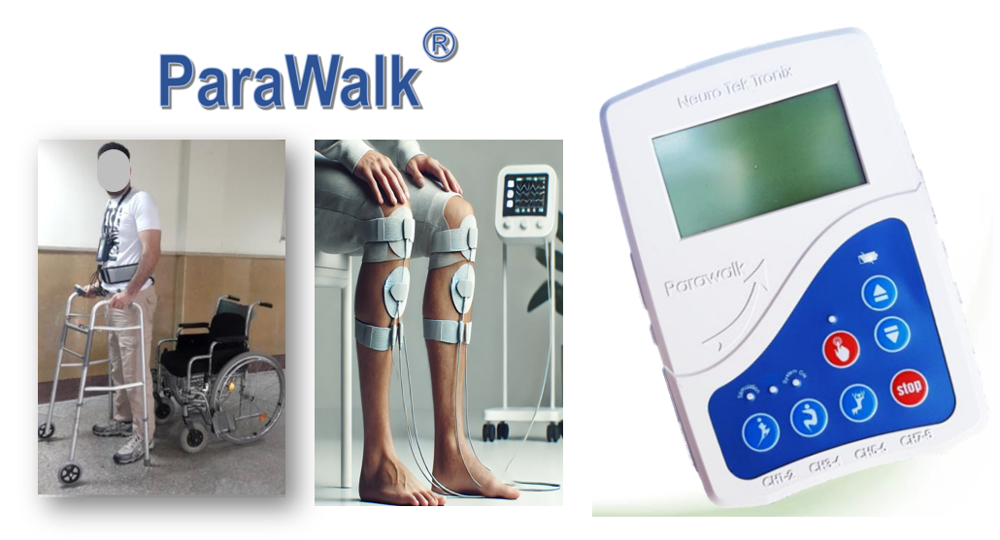
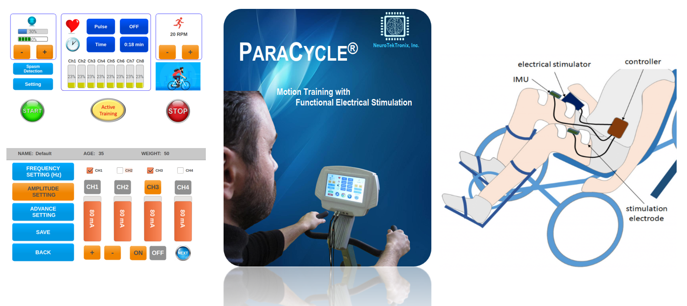
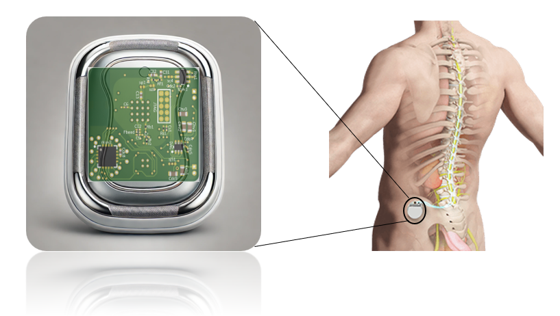
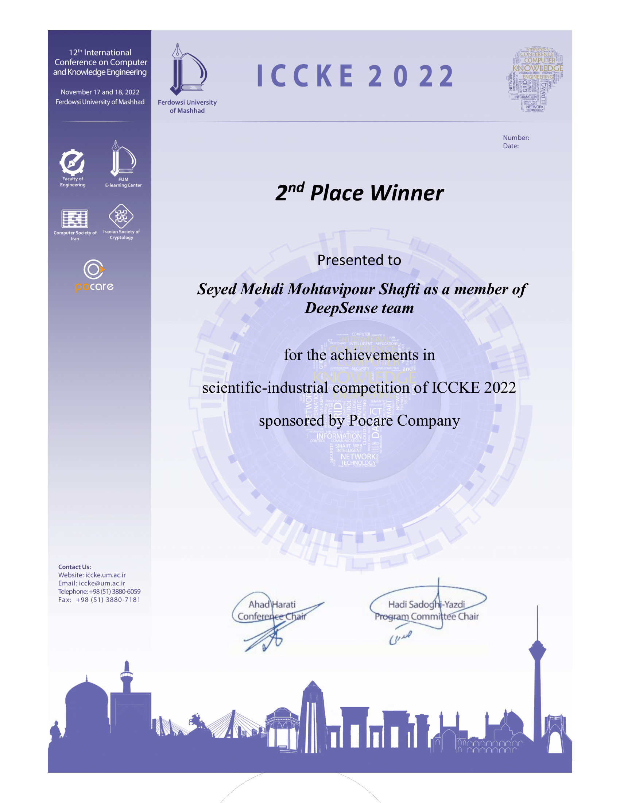

Education
-
- Ph.D. Degree in Electrical Engineering - Electronics
IUST University
Sep 2016 - Feb 2024
Dissertation Title: Graph-based Data Flow Mapping in Hardware Accelerators
Course GPA: 4.00 / 4.00
-
- Master's Degree in Electrical Enginnering - Electronics
IUST University
Sep 2012 - Aug 2014
Dissertation Title: Design of Adaptive Cruise Control (ACC) system in autonomious vehicles through evolutionary algorithms
Course GPA: 3.81 / 4.00
-
- Bachalor's Degree in Electrical Enginnering - Electronics
Guilan University
Sep 2008 - Jun 2012
Dissertation Title: Modelling of communication channel between moving targets for high-bandwidth transmission
Course GPA: 3.55 / 4.00
Work Experience
-
- Hardware - Software Embedded Systems Engineer, Neural Electronic Systems Technology Corporation, Jan 2017 - May 2024
1- “ParaWalk”, muscle stimulation product for standing and walking in patients with spinal cord injuries
8 Active Channels for Stimulating and Contraction in 8 Different Muscle groups
Current-based Output Adjustable from 0 to 100mA with 1mA Resolution
Battery Included with Recharging Capability
Remote Installed on Walker for Wireless Communication with Main Device
2- “ParaCycle”, muscle stimulation product for cycling training in patients with spinal cord injuries
Motor DC + Muscle Stimulation for Cycling
PI Controller for Smooth Cycling
Speed measure (RPM) by Rotary Encoder + Angle of Cycling Pedals
A Raspberry Pi-based Graphical User Interface
3- "Ultra-Low-Power Implantable Neurostimulator", an implantable device for neurostimulation with wireless power transmission capability
A very Tiny Board for Stimulation Pulse Generation
8 Active Stimulation Channels
Pulse Amplitude Between 10-1000 uA
Board Size: 25×22×5 mm
Wireless Data Transmission Through BLE Protocol
Wireless Power Transmission for Battery Charging
- Researcher, Automatic violent behavior detection in scholl CCTVs, Joint project with Guilan university, Apr 2015 - Aug 2016
Technical Skills
-
- Hardware Developing
Altium PCB CAD Design
Microprocessor and Microcontroller Developement of Microchip and ST Family
Wired and Wireless Data Transmission, I2C, SPI, USART, ZigBee, and Bluetooth Low Energy (BLE)
Embedded System Development, Raspberry Pi
Soldering and Mounting, Powersupply, Load devices, Oscilloscopes, Signal Generators
Experience with medical regulation safety standard such as (IEC 60601) and (IEC 62304)
-
- Software Programming
C/C++ Embedded Coding for Digital Boards
Other Programming Languages: Python, MATLAB, VHDL
Real-time operating system for time-based scheduling, FreeRTOS
Real-time testing environment through LabVIEW software
Graphical User Interface (GUI) design in embedded systems through QT frameworks
IDEs: AtmelStudio, ST CubeMX, Python Idle, VS Code, Anaconda, ISE Xilinx
Frameworks: QT Python GUI Developer, Kivy Python Android Developer, Tensorflow, Pytorch, OpenCV
OS: Raspbian, Linux, Windows
Awards
-
- Winner of Scientific-Industrial Computer Vision Competition
Proposing a machine learning framework for abnormality detection of chicken behavior in poultry houses, 2022, in 12th International Conference on Computer and Knowledge Engineering

- Rank 3 among 60 Electronic B.Sc. students after graduation
Publications
-
Research Paper on Computer Architecture and Distributed Computing
1- PRISA: A Potential Region-based Intelligent Search Algorithm for Dataflow Graph Mapping in Spatial CGRAs. ACM Transactions on Reconfigurable Technology and Systems, 2025
2- A customized balanced-objective genetic algorithm for task scheduling in reconfigurable computing systems. Journal of Knowledge and Information Systems, 2025
3- GCN-RA: A graph convolutional network-based resource allocator for reconfigurable systems. Journal of Computational Science, 2023
4- An analytically derived vectorized model for application graph mapping in interconnection networks. Journal of Ambient Intelligence and Humanized Computing, 2023
5- A quad-form clustered mapping approach for large-scale applications of reconfigurable computing systems. Computers & Electrical Engineering, 2022
6- A potential solutions-based parallelized GA for application graph mapping in reconfigurable hardware. 11th International Conference on Information and Knowledge Technology, 2020
7- A large-scale application mapping in reconfigurable hardware using deep graph convolutional network. 10th International Conference on Computer and Knowledge Engineering, 2020
8- A novel packet exchanging strategy for preventing HoL-blocking in fat-trees. Cluster Computing, 2020
9- A low-cost distributed mapping for large-scale applications of reconfigurable computing systems. International Computer Conference, 2020
10- A link-elimination partitioning approach for application graph mapping in reconfigurable computing systems. The Journal of Supercomputing, 2020
11- On-Line Reusing-Based Scheduling Algorithm for 2-Dimensional Tasks in Reconfigurable Hardware. Transactions on Machine Intelligence, 2018
12- Online Task Scheduling of Dynamically Reconfigurable Architecture: A Latency-Aware Approach. 2nd International Conference on Electrical Engineering, 2017
Research Paper on Computer Vision
1- An accurate violence detection framework using unsupervised spatial–temporal action translation network. The Visual Computer, 2024
2- Broiler-Net: A Deep Convolutional Framework for Broiler Behavior Analysis in Poultry Houses. arXiv preprint arXiv:2401.12176, 2024
3- Violence detection in videos: a review on hand-crafted and deep-learning techniques, 2024
4- Learning deep latent space for unsupervised violence detection. Multimedia tools and applications, 2023
5- A multi-stream CNN for deep violence detection in video sequences using handcrafted features. The Visual Computer, 2022
6- DABA-net: deep acceleration-based AutoEncoder network for violence detection in surveillance cameras. International Conference on Machine Vision and Image Processing, 2022
7- Vi-Net: a deep violent flow network for violence detection in video sequences. 11th International Conference on Information and Knowledge Technology, 2020
Research Paper on Autonomous Vehicles
1- Smooth longitudinal driving strategy with adjustable nonlinear reference model for autonomous vehicles. International Journal of Dynamics and Control, 2023
2- An analytically derived reference signal to guarantee safety and comfort in adaptive cruise control systems. Journal of Intelligent Transportation Systems, 2021
3- A guaranteed-comfort and safe adaptive cruise control by considering driver’s acceptance level. International Journal of Dynamics and Control, 2019
4- A novel design for adaptive cruise control based on extended reference model. 4th International Conference on Knowledge-Based Engineering and Innovation, 2017
Contact
Email: mahyar.m1990@gmail.com
Phone: (+31) 653151031